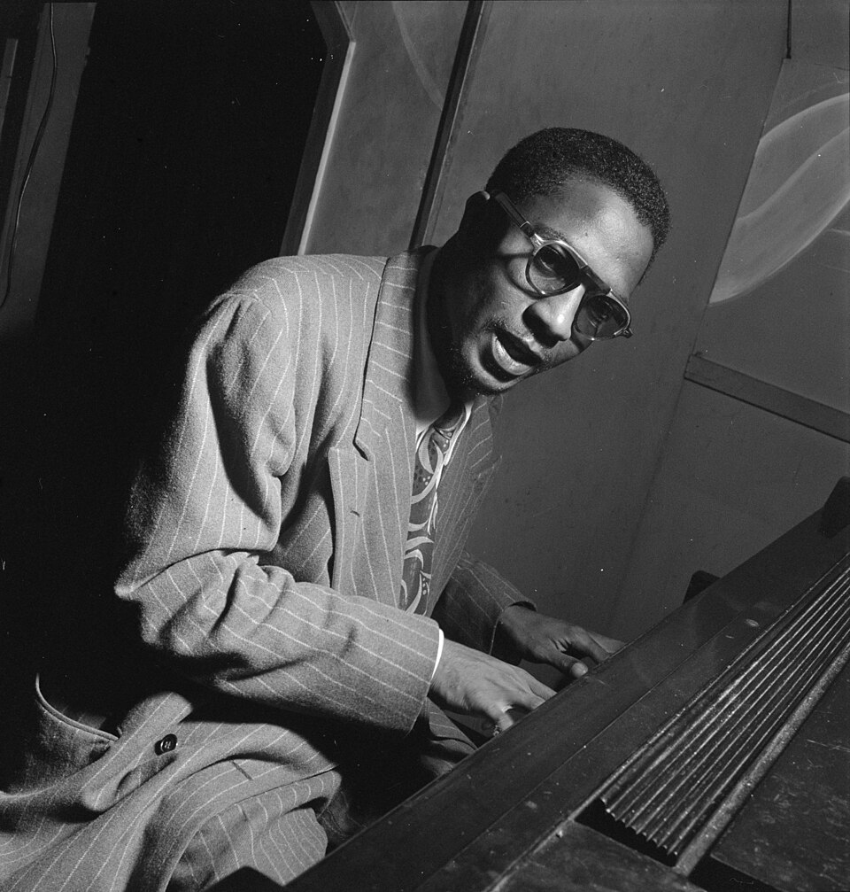
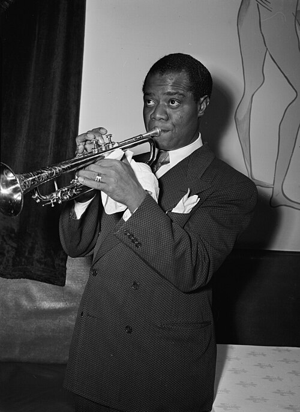

Nueva Orleans y el Jazz Tradicional
Las bandas callejeras y los clubes de Storyville dan forma a la improvisación colectiva. Surgen figuras pioneras como Buddy Bolden y Jelly Roll Morton.

The Art of Jazz
«El jazz no es solo música. Es una forma de sentir, crear y expresar libertad».Descubre el jazz
El jazz nació a finales del siglo XIX y principios del XX en las comunidades afroamericanas de Nueva Orleans, Luisiana. Esta ciudad portuaria fue un crisol cultural donde se fusionaron los ritmos sincopados de África Occidental, el blues, el ragtime y la tradición de las bandas de metales europeas.
A diferencia de la música clásica escrita, el jazz puso en el centro la improvisación: la capacidad de los músicos para dialogar con sus instrumentos y crear melodías únicas en tiempo real.
Las bandas callejeras y los clubes de Storyville dan forma a la improvisación colectiva. Surgen figuras pioneras como Buddy Bolden y Jelly Roll Morton.
El jazz se convierte en la música popular de baile en Estados Unidos gracias a grandes orquestas lideradas por Duke Ellington y Count Basie.
Charlie Parker y Dizzy Gillespie transforman el jazz en música de escucha: tiempos vertiginosos, armonías complejas y virtuosismo individual.
El género se diversifica entre la serenidad melódica de la Costa Oeste y la intensidad rítmica de Nueva York, culminando en obras maestras como Kind of Blue.
El jazz incorpora sintetizadores, ritmos de rock, funk, música latina y hip-hop, manteniéndose como un lenguaje vivo en todo el mundo.
Haz clic en cada estilo para desplegar sus características principales.
Descripción: Estilo bailable y enérgico que dominó las salas de baile durante las décadas de 1930 y 1940.
Características: Uso de grandes orquestas (Big Bands), secciones de metales y maderas bien definidas, y un pulso rítmico que invita al movimiento.
Artista representativo: Duke Ellington / Benny Goodman.
Descripción: Movimiento moderno nacido en los clubes nocturnos de Nueva York que convirtió al jazz en un arte intelectual.
Características: Cuartetos o quintetos pequeños, tempos muy rápidos, cambios de acordes complejos e improvisaciones virtuosas.
Artista representativo: Charlie Parker / Dizzy Gillespie.
Descripción: Una respuesta relajada, lírica e introspectiva frente a la intensidad frenética del bebop.
Características: Tonos suaves, arreglos cuidados, menor vibrato en los vientos y una atmósfera elegante y melancólica.
Artista representativo: Chet Baker / Miles Davis (etapa Birth of the Cool).
Descripción: Extensión del bebop surgida a mediados de los años 50 que reconectó el jazz con sus raíces afroamericanas.
Características: Fuerte influencia del blues, el gospel y el rhythm & blues, con ritmos contundentes y melodías expresivas.
Artista representativo: Art Blakey & The Jazz Messengers / Horace Silver.
Descripción: Enfoque revolucionario de finales de los 50 que liberó a los músicos de las progresiones rápidas de acordes.
Características: Improvisación basada en escalas musicales (modos) sostenidas durante varios compases, creando espacio y profundidad.
Artista representativo: Miles Davis / John Coltrane.
Descripción: Híbrido nacido a finales de los 60 que mezcló la improvisación del jazz con la potencia del rock y el funk.
Características: Incorporación de guitarras eléctricas, bajos eléctricos, sintetizadores y patrones rítmicos cercanos al rock y al soul.
Artista representativo: Herbie Hancock / Weather Report.

Conocido como «Satchmo», revolucionó el jazz al transformar la improvisación solista y popularizar el canto scat con su inconfundible voz grave.